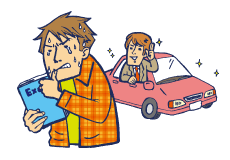
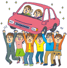
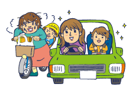
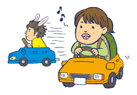
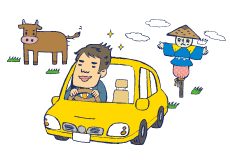
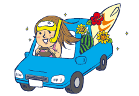
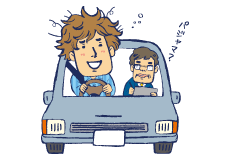
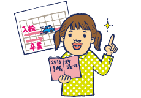
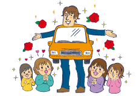
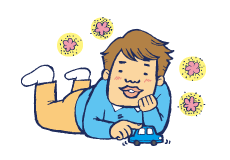

要運転免許の職種や業種もまだまだありますよね。就職後も運転免許があれば仕事の幅も広がります。


要運転免許の職種や業種もまだまだありますよね。就職後も運転免許があれば仕事の幅も広がります。

小さなお子様とお出かけする時に、運転免許の本当のありがたみがわかるのかもしれませんね。

通学型の自動車学校であれば、卒業までの期間を気にせずじっくり通うことも可能ですよ。

社会に出ると突然運転免許が必要になることも。先を見越して自動車学校に通ってみてはいかがですか？

コツコツ時間を作って免許を取り、長期のお休みに車を使ってしっかり遊ぶ…賢い作戦かもしれません。

家から近いと気軽に通えるので、ペーパードライバー向けの講習や限定解除などの際にも安心ですよね。

通学型の自動車学校でもスケジュールをうまく調整すれば合宿校と同程度の期間で免許取得可能です。

自動車のある生活はドライブや旅行など楽しいイベントも増えますよね。めざせバラ色の生活!!

時間に余裕のある方は今が通い時かも。生活が忙しくなる前に免許を取ってしまいましょう。